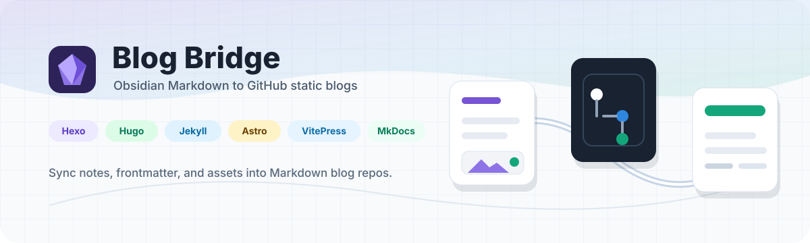
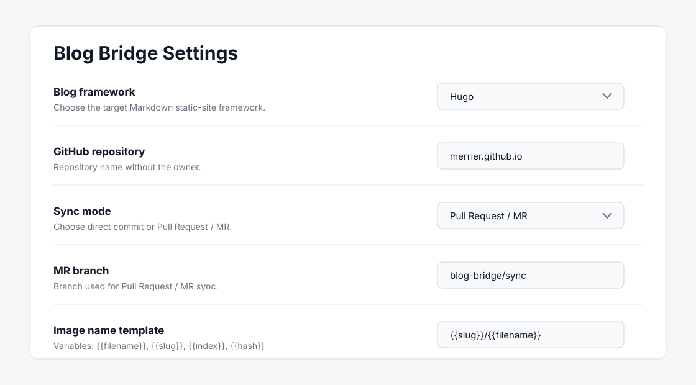

Obsidian 桌面插件
你的笔记，本来就该成为博客。
Blog Bridge 将选中的 Markdown 笔记同步到 GitHub 静态站仓库，保留 frontmatter，也处理本地图片。
手动同步
本地图片
GitHub提交

一条清晰的发布路径
从本地库到仓库，全程保持 Markdown。
Obsidian
Markdown 笔记
Blog Bridge
元数据、别名、图片
GitHub
提交或 PR
选择笔记，然后交给 Blog Bridge 生成文章路径、图片资源、commit 和可选 PR。
适配真实的静态站
常见博客框架，路径规则已经备好。
HexoHugoJekyllAstroVitePressMkDocs

框架路径预设文章目录与图片目录跟随目标框架。
保留 frontmatter已有元数据不乱改，只补齐缺失字段。

同步状态一眼清楚
看见变化，只同步准备好的内容。
按标题、标签和同步状态筛选。多选笔记后顺序同步，再跳转到对应 commit 或 PR。
Blog Bridge for Obsidian